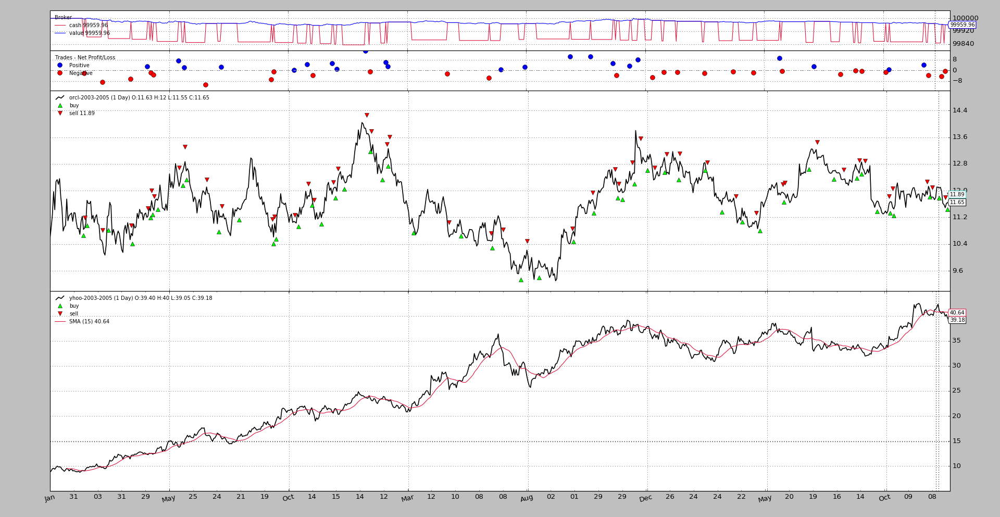

Data Synchronization Rework¶
In the latest release the minor number has been moved from 8 to 9 to
indicate a change which may have some behavioral impact, regardless, even if
compatibility has been taken into account.
With release 1.9.0.99 the entire mechanism to synchronize multiple datas
using datetime has been reworked (for both next and once modes).
Note
All standard test cases get a nice OK from nosetests, but complex
uses cases might uncover corner cases not covered.
The previous behavior was discussed in tickets #39, #76, #115 and #129 and this has been the basis to deprecate the old behavior.
Now, the datetime timestamp of the incoming prices is checked to align datas and deliver what’s new (older bars first). Benefits:
- Non time aligned data can now be used.
- In live feeds the behavior improves because the re-synchronizes automatically
Let’s recall that the old behavior used the 1st data introduced in the system as a master for time synchronization and no other data could be faster. The order of introduction of datas in the system plays no role now.
Part of the rework has addressed plotting which naively assumed all datas ended up having the same length, being this a consequence of having a time master. The new plotting code allows datas of different length.
Note
The old behavior is still available by using:
cerebro = bt.Cerebro(oldsync=True)
or:
cerebro.rund(oldsync=True)
Seeing it with a sample¶
The multidata-strategy sample has been used as the basis for the
multidata-strategy-unaligned sample (in the same folder). Two data samples
have been manually altered to remove some bars. Both had 756 bars and have
been capped down to 753 at two different points in time
- End of 2004, beginning of 2005 for
YHOO- End of 2005 for
ORCL
As always, a execution is worth a thousand words.
First the old behavior¶
The execution:
$ ./multidata-strategy-unaligned.py --oldsync --plot
From the output, the important part is right at the end:
...
Self len: 753
Data0 len: 753
Data1 len: 750
Data0 len == Data1 len: False
Data0 dt: 2005-12-27 23:59:59
Data1 dt: 2005-12-27 23:59:59
...
To notice:
- The strategy has a length of
753- The 1st data (time master) also has
753- The 2nd data (time slave) has
750
It’s not obvious from the output but the YHOO file contains data up to
2005-12-30, which is not being processed by the system.
The visual chart
The new behavior¶
The execution:
$ ./multidata-strategy-unaligned.py --plot
From the output, the important part is right at the end:
...
Self len: 756
Data0 len: 753
Data1 len: 753
Data0 len == Data1 len: True
Data0 dt: 2005-12-27 23:59:59
Data1 dt: 2005-12-30 23:59:59
...
The behavior has obvioulsy improved:
- The strategy goes to a length of
756and each of the datas to the full753data points.- Because the removed data points don’t overlap the strategy ends up being
3units longer than the datas.2005-12-30has been reached withdata1(it’s one of the data points removed fordata0), so all datas have been processed to the very end
The visual chart
Although the charts do not exhibit major differences, they are actually different behind the scenes.
Another check¶
For the interested user, the data-multitimeframe sample has been updated to
also support a --oldsync parameter. Because now different length datas are
being plotted, the visual aspect of the larger time frame is better.
Sample Usage¶
$ ./multidata-strategy-unaligned.py --help
usage: multidata-strategy-unaligned.py [-h] [--data0 DATA0] [--data1 DATA1]
[--fromdate FROMDATE] [--todate TODATE]
[--period PERIOD] [--cash CASH]
[--runnext] [--nopreload] [--oldsync]
[--commperc COMMPERC] [--stake STAKE]
[--plot] [--numfigs NUMFIGS]
MultiData Strategy
optional arguments:
-h, --help show this help message and exit
--data0 DATA0, -d0 DATA0
1st data into the system
--data1 DATA1, -d1 DATA1
2nd data into the system
--fromdate FROMDATE, -f FROMDATE
Starting date in YYYY-MM-DD format
--todate TODATE, -t TODATE
Starting date in YYYY-MM-DD format
--period PERIOD Period to apply to the Simple Moving Average
--cash CASH Starting Cash
--runnext Use next by next instead of runonce
--nopreload Do not preload the data
--oldsync Use old data synchronization method
--commperc COMMPERC Percentage commission (0.005 is 0.5%
--stake STAKE Stake to apply in each operation
--plot, -p Plot the read data
--numfigs NUMFIGS, -n NUMFIGS
Plot using numfigs figures
Sample Code¶
from __future__ import (absolute_import, division, print_function,
unicode_literals)
import argparse
import datetime
# The above could be sent to an independent module
import backtrader as bt
import backtrader.feeds as btfeeds
import backtrader.indicators as btind
class MultiDataStrategy(bt.Strategy):
'''
This strategy operates on 2 datas. The expectation is that the 2 datas are
correlated and the 2nd data is used to generate signals on the 1st
- Buy/Sell Operationss will be executed on the 1st data
- The signals are generated using a Simple Moving Average on the 2nd data
when the close price crosses upwwards/downwards
The strategy is a long-only strategy
'''
params = dict(
period=15,
stake=10,
printout=True,
)
def log(self, txt, dt=None):
if self.p.printout:
dt = dt or self.data.datetime[0]
dt = bt.num2date(dt)
print('%s, %s' % (dt.isoformat(), txt))
def notify_order(self, order):
if order.status in [bt.Order.Submitted, bt.Order.Accepted]:
return # Await further notifications
if order.status == order.Completed:
if order.isbuy():
buytxt = 'BUY COMPLETE, %.2f' % order.executed.price
self.log(buytxt, order.executed.dt)
else:
selltxt = 'SELL COMPLETE, %.2f' % order.executed.price
self.log(selltxt, order.executed.dt)
elif order.status in [order.Expired, order.Canceled, order.Margin]:
self.log('%s ,' % order.Status[order.status])
pass # Simply log
# Allow new orders
self.orderid = None
def __init__(self):
# To control operation entries
self.orderid = None
# Create SMA on 2nd data
sma = btind.MovAv.SMA(self.data1, period=self.p.period)
# Create a CrossOver Signal from close an moving average
self.signal = btind.CrossOver(self.data1.close, sma)
def next(self):
if self.orderid:
return # if an order is active, no new orders are allowed
if self.p.printout:
print('Self len:', len(self))
print('Data0 len:', len(self.data0))
print('Data1 len:', len(self.data1))
print('Data0 len == Data1 len:',
len(self.data0) == len(self.data1))
print('Data0 dt:', self.data0.datetime.datetime())
print('Data1 dt:', self.data1.datetime.datetime())
if not self.position: # not yet in market
if self.signal > 0.0: # cross upwards
self.log('BUY CREATE , %.2f' % self.data1.close[0])
self.buy(size=self.p.stake)
else: # in the market
if self.signal < 0.0: # crosss downwards
self.log('SELL CREATE , %.2f' % self.data1.close[0])
self.sell(size=self.p.stake)
def stop(self):
print('==================================================')
print('Starting Value - %.2f' % self.broker.startingcash)
print('Ending Value - %.2f' % self.broker.getvalue())
print('==================================================')
def runstrategy():
args = parse_args()
# Create a cerebro
cerebro = bt.Cerebro()
# Get the dates from the args
fromdate = datetime.datetime.strptime(args.fromdate, '%Y-%m-%d')
todate = datetime.datetime.strptime(args.todate, '%Y-%m-%d')
# Create the 1st data
data0 = btfeeds.YahooFinanceCSVData(
dataname=args.data0,
fromdate=fromdate,
todate=todate)
# Add the 1st data to cerebro
cerebro.adddata(data0)
# Create the 2nd data
data1 = btfeeds.YahooFinanceCSVData(
dataname=args.data1,
fromdate=fromdate,
todate=todate)
# Add the 2nd data to cerebro
cerebro.adddata(data1)
# Add the strategy
cerebro.addstrategy(MultiDataStrategy,
period=args.period,
stake=args.stake)
# Add the commission - only stocks like a for each operation
cerebro.broker.setcash(args.cash)
# Add the commission - only stocks like a for each operation
cerebro.broker.setcommission(commission=args.commperc)
# And run it
cerebro.run(runonce=not args.runnext,
preload=not args.nopreload,
oldsync=args.oldsync)
# Plot if requested
if args.plot:
cerebro.plot(numfigs=args.numfigs, volume=False, zdown=False)
def parse_args():
parser = argparse.ArgumentParser(description='MultiData Strategy')
parser.add_argument('--data0', '-d0',
default='../../datas/orcl-2003-2005.txt',
help='1st data into the system')
parser.add_argument('--data1', '-d1',
default='../../datas/yhoo-2003-2005.txt',
help='2nd data into the system')
parser.add_argument('--fromdate', '-f',
default='2003-01-01',
help='Starting date in YYYY-MM-DD format')
parser.add_argument('--todate', '-t',
default='2005-12-31',
help='Starting date in YYYY-MM-DD format')
parser.add_argument('--period', default=15, type=int,
help='Period to apply to the Simple Moving Average')
parser.add_argument('--cash', default=100000, type=int,
help='Starting Cash')
parser.add_argument('--runnext', action='store_true',
help='Use next by next instead of runonce')
parser.add_argument('--nopreload', action='store_true',
help='Do not preload the data')
parser.add_argument('--oldsync', action='store_true',
help='Use old data synchronization method')
parser.add_argument('--commperc', default=0.005, type=float,
help='Percentage commission (0.005 is 0.5%%')
parser.add_argument('--stake', default=10, type=int,
help='Stake to apply in each operation')
parser.add_argument('--plot', '-p', action='store_true',
help='Plot the read data')
parser.add_argument('--numfigs', '-n', default=1,
help='Plot using numfigs figures')
return parser.parse_args()
if __name__ == '__main__':
runstrategy()


{kind=link}
{kind=link}
{kind=link}
{kind=link}